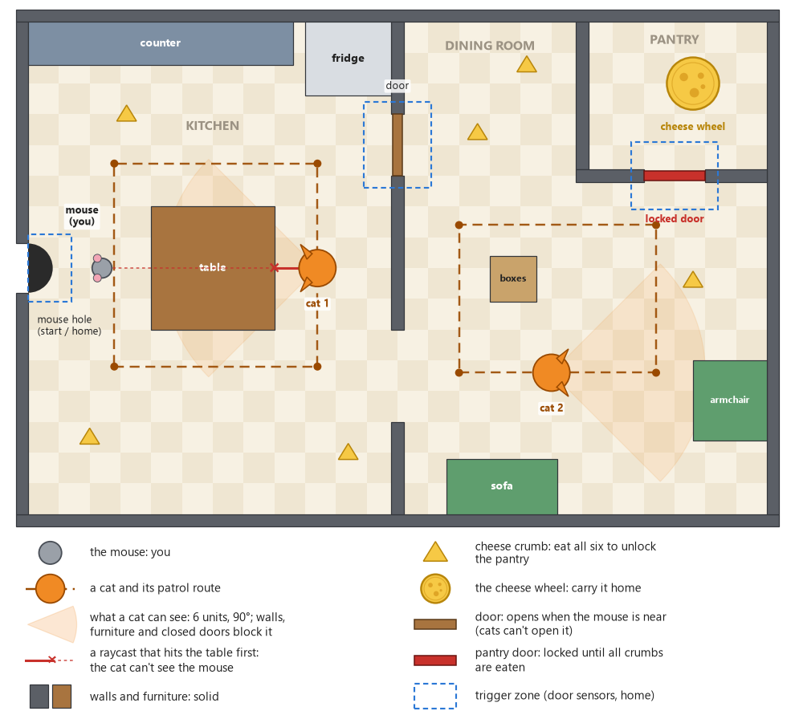
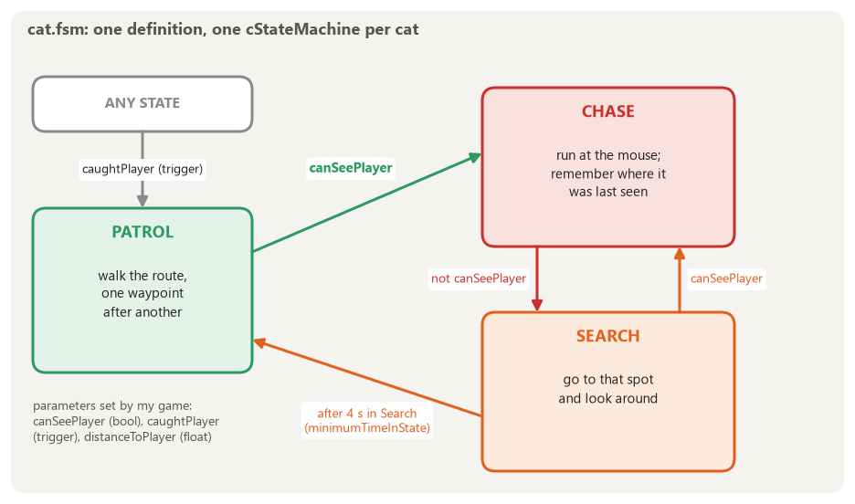
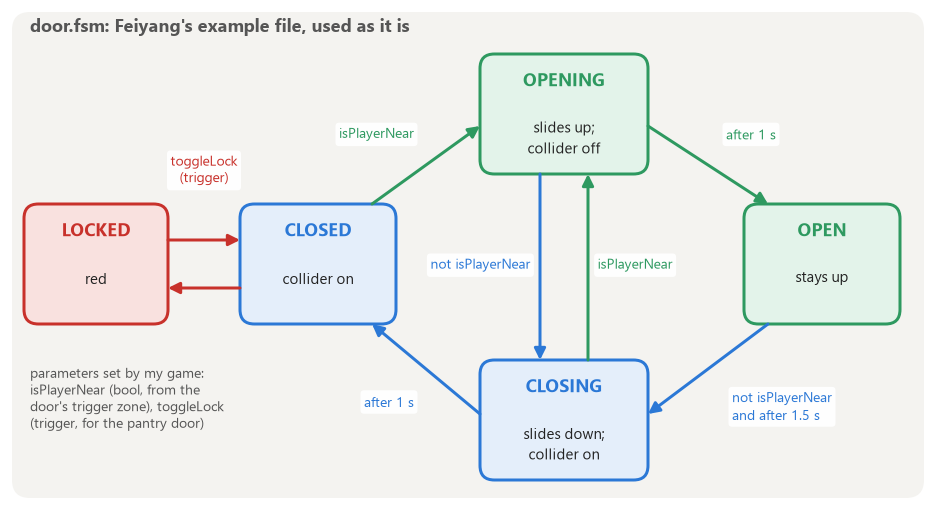
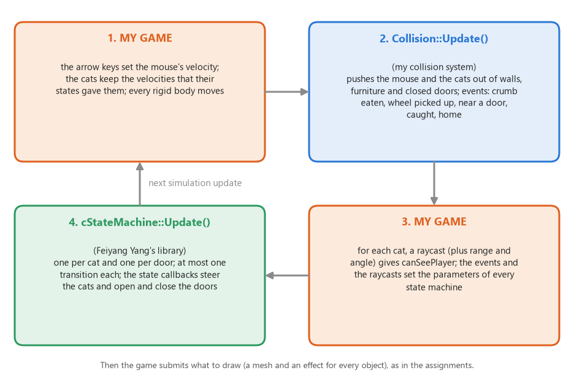

Final Project Proposal: Kitchen Raid
A small top-down sneaking game: a mouse steals cheese from a kitchen at night while the cats patrol. It uses my collision system and Feiyang Yang's AI state machine library.
The game
Kitchen Raid (a working title) is a small top-down sneaking game. You are a mouse. It is night, the kitchen is full of cheese, and two cats are walking around the house. You win by bringing the big cheese wheel home without being caught.
For the final project we make a new game with the engine we built this semester, using our own Engine System and at least one Engine System made by a classmate. I wanted a game where both systems are needed for the main idea and aren't just added on the side. Sneaking only works if walls stop you and also hide you (collision and raycasts), and if the guards act differently when they see you and when they lose you (a state machine). It is also the game that Feiyang Yang and I sketched at the end of our joint Engine System presentation (https://fffeiya.github.io/game-essay/engine-system-presentation/), so now I get to find out whether that sketch really works.
One round
- You start in the mouse hole on the left. The camera looks down at the whole level at an angle, like an old arcade game, so you can always see where the cats are.
- Six cheese crumbs are spread over the kitchen and the dining room. Run over a crumb to eat it. When all six are eaten, the pantry door unlocks.
- The cheese wheel is in the pantry. Run into it to pick it up. Carrying it makes you slower.
- Bring the wheel back to the mouse hole and you win: the background flashes green and a new round starts.
- If a cat touches you, you are caught: the background flashes red and you are back in the mouse hole. If you were carrying the wheel, it goes back to the pantry. Crumbs you have eaten stay eaten, so every try gets you closer.
The cats
Each cat walks its own patrol route. A cat sees you if you are within 6 units, inside the 90° in front of it, and nothing solid is between you: walls, furniture and closed doors all block its view. When a cat sees you, it chases you, faster than it walks. If you break its line of sight (behind the table, or through a door), it runs to the spot where it last saw you and looks around for a few seconds before it goes back to its route. A small marker above each cat's head shows its state, so the player (and the people watching my presentation) can see what it is thinking.
Doors
The door between the kitchen and the dining room opens when the mouse is close and closes again after the mouse has left. Cats can't open doors, so a closed door both stops a chasing cat and hides you from it. The pantry door works the same way, except that it starts locked (and red) until all six crumbs are eaten.

Controls (planned)
Arrow keys or WASD: move the mouse. Esc: quit. That is all: there is no jumping and nothing to aim.
What the game will do, and what it won't
It will
- be a new game project in my solution, next to ExampleGame and MyGame (MyGame stays my collision demo).
- have one level: a kitchen, a dining room and a pantry, with walls, furniture, two doors, six crumbs, one cheese wheel and two cats.
- let the mouse run around the floor; walls, furniture and closed doors stop both the mouse and the cats.
- have cats that patrol, see the mouse (range, view angle and a raycast), chase it, search for it when they lose it, and catch it.
- have doors that open for the mouse and close after it, and one door that stays locked until the crumbs are eaten.
- show what is happening without any text: the background flashes red when you are caught and green when you win, the locked door is red, and every cat has a state marker.
- use meshes that are fun to look at instead of boxes: a mouse, cats, cheese, a table, a fridge, a sofa. I'll make simple low-poly ones in Maya (or start from free models) and export them with the Maya exporter I wrote in Assignment 07. Colors come from vertex colors, since our meshes have no textures.
- build without warnings in all four configurations (Direct3D and OpenGL, Debug and Release), and pass the usual test: build only the game first, then the assets.
It won't
- have text, menus, a HUD, a score, lives or a timer. Our engine can't draw text, and the assignment doesn't need any of these.
- have sound, textures or animation. The mouse and the cats are rigid meshes that turn to face the way they walk.
- have pathfinding. A cat walks straight toward a waypoint, the mouse, or the place where it last saw the mouse. The collision response slides it along walls, but it can get stuck behind furniture. That is fine: it is one of the ways to escape.
- have jumping or gravity. Everything happens on one floor, even though the colliders are 3D.
- have more than one level, or saving.
- have a second player or a gamepad: one player, with the keyboard.
- use physics: no mass, bounce, friction or rotating colliders. My collision system only stops things and tells the game what touched what.
If I have time
- A third cat that sleeps next to the pantry and only wakes up if you come too close (a fourth state, Asleep).
- A Pounce state: when a chasing cat gets very close, it jumps forward fast and then has to wait for a moment, so you can dodge it.
- A sneak key (hold Shift): slower, but quiet. Running close behind a cat would make it turn around.
- A custom shader, for example cheese that glows and pulses, using the simulation time that is already in the per-frame constant buffer.
- A camera that follows the mouse, so that the level can be bigger.
How I will use my Engine System (collision)
My Engine System is a collision library (https://game6320-website.netlify.app/engine-system/). Objects get spheres and axis-aligned boxes that are described in Lua files, layers say which kinds of objects touch, solid objects stop each other, triggers only report, the game gets OnEnter, OnStay and OnExit events, and it can cast rays. In Kitchen Raid it does most of the game's rules:
| What happens in the game | How the collision system does it |
|---|---|
| Walls and furniture stop you | static boxes in the wall layer; the mouse and the cats are solid spheres that get pushed back out, and their velocity into the wall is removed, so they slide along it |
| Eating a crumb, picking up the wheel | trigger spheres in the pickup layer; the mouse's OnEnter hides the crumb and disables its collider |
| Getting caught | the mouse's OnEnter with a collider in the cat layer |
| Getting home | a trigger box in the mouse hole; OnEnter wins the round if the mouse carries the wheel |
| Doors | a solid box that is disabled while the door is opening or open, and a bigger trigger box around it whose OnEnter and OnExit tell the door's state machine whether the mouse is near |
| Can a cat see the mouse? | after a distance and angle check, a raycast from the cat to the mouse that can hit walls, furniture, doors and the mouse: the cat sees the mouse only if the mouse is the first thing that the ray hits |
The layers file will be something like this (it may change while I build the game):
-- Content/Collision/game.layers (in the new game's folder)
return
{
layers = { "wall", "door", "mouse", "cat", "pickup", "zone" },
-- Pairs that touch; every other pair passes through without events
interactions =
{
{ "mouse", "wall" }, { "mouse", "door" }, { "mouse", "cat" },
{ "mouse", "pickup" }, { "mouse", "zone" },
{ "cat", "wall" }, { "cat", "door" }, { "cat", "cat" },
},
}And the line of sight is the example from my own user guide, with a door layer added:
// Can this cat see the mouse? (after a distance and view angle check)
const auto toMouse = m_mouse.rigidBodyState.position - cat.rigidBodyState.position;
Collision::sRaycastHit hit;
const bool canSeePlayer = isInViewCone( cat, toMouse )
&& Collision::Raycast( cat.rigidBodyState.position, toMouse, toMouse.GetLength(), hit,
m_layerMask_wall | m_layerMask_door | m_layerMask_mouse )
&& ( hit.collider == m_mouse.collider );This will also be the first time that my collision system goes into a game I didn't write it for. I'll add it to the new game project by following my own README and user guide, and in the final write-up I'll say what was easy and what I would change. My demo already has a patroller that uses raycasts, but a door that is only sometimes solid, and trigger zones that turn into parameters for another system, will test parts of the interface that the demo hardly used.

The other Engine System: Feiyang Yang's AI state machine
I will use the AI state machine library made by Feiyang Yang. Its write-up is at https://fffeiya.github.io/game-essay/engine-system-write-up/, and I'll use the code ZIP from that page (https://fffeiya.github.io/files/EngineSystem_StateMachine.zip). Feiyang and I presented our Engine Systems together, so I already know how it works, and we found that the two systems fit together well.
With it, an AI is described in a Lua .fsm file: the initial state, the parameters that the game sets (floats, bools and triggers), the states, and the transitions between them. A transition fires when all of its conditions are true and, if it has one, its minimum time in the state has passed, and the "any state" transitions are checked first. StateMachineBuilder checks the file and builds it into a binary .fsmbin file during the asset build, the same way our MeshBuilder works, and a mistake in the file fails the build with the file and line. In the game, a cStateMachineDefinition is loaded once (it is reference counted, like a mesh) and every agent gets its own cStateMachine. The game looks up state and parameter handles by name once, then every simulation update it sets the parameters (SetBool(), SetFloat(), SetTrigger()) and calls Update(). At most one transition fires per update, and each state can have enter, update and exit callbacks: function pointers with a void* for user data, like the rest of the engine. In Debug builds every state change is written to the log together with the condition that caused it, which will help a lot when a cat does something strange.
What it will do in my game
- The cats (
cat.fsm: one definition, and onecStateMachineper cat): Patrol, Chase and Search, plus an any-state transition back to Patrol when a cat catches the mouse. My game sets canSeePlayer (from the raycast), distanceToPlayer, and the caughtPlayer trigger (from a collision event). The state callbacks do the moving, and each cat's callbacks get that cat as their user data (the way Feiyang's door example does it): Patrol walks to the next waypoint, Chase runs at the mouse and remembers where it last saw it, and Search walks to that spot and turns around. After 4 seconds in Search (minimumTimeInState) the cat goes back to patrolling. Feiyang's write-up warns that a minimum time in the state is not the same as "4 seconds without seeing the player", but here it is: a cat enters Search at the moment it loses the mouse, and seeing the mouse again sends it back to Chase. Each state's enter callback also changes the marker above the cat's head. - The doors (
door.fsm: onecStateMachineper door): this is the door.fsm example that comes with Feiyang's library, used as it is. It has five states (Closed, Opening, Open, Closing and Locked), an isPlayerNear bool, a toggleLock trigger, and timed transitions that give the door a second to slide. Feiyang's demo sets isPlayerNear from a distance; my game will set it from the door's trigger zone instead, and sends toggleLock to lock the pantry door at the start and to unlock it when the last crumb is eaten. Opening's enter callback switches the door's solid collider off, Closing's switches it back on, and Locked makes the door red. - The order (Figure 5): every simulation update, first the game moves everything, then
Collision::Update()pushes things apart and sends the events, then the game turns the events and raycasts into parameters, and last every state machine updates and its callbacks set the velocities for the next update. That is the order that Feiyang and I described in our presentation; now it has to work in a real game.



Why a state machine instead of a few if statements? Even three states with timers would turn into a tangle of bools in C++. In a data file I can tune when a cat gives up, or add the Asleep or Pounce state, without changing the code that moves the cats, and the debug log tells me exactly which condition fired.
Plan
| When | What |
|---|---|
| Nov 21 to 24 | Create the new game project and make it build in all four configurations. Add Feiyang's StateMachine library and StateMachineBuilder by following their README. Walls, floor, and the mouse moving with my collision system. |
| Nov 25 to 29 | The cats: patrol routes, raycast vision, cat.fsm with Chase and Search, getting caught. The crumbs, the cheese wheel and getting home. |
| Nov 30 to Dec 3 | Doors and door.fsm. Meshes in Maya (the mouse, a cat, cheese, furniture). The camera. Play-testing the speeds and how far the cats can see. Then the "if I have time" list. |
| Dec 4 to 6 | Release builds and the download ZIP, screenshots, and the final write-up (due December 6). |
| Dec 7 | The presentation in class. |
What could go wrong
- Cats getting stuck on furniture while they chase you. Search gives up after a few seconds anyway, and I'll keep furniture away from the patrol routes. If it still looks bad, a cat that hasn't moved for a second could give up the chase.
- Setting up a library that I didn't write might show problems with its instructions. Finding that out is part of the point of the final project. I'll write down what happened, and tell Feiyang about anything that should be fixed.
- Fast objects tunneling through thin walls. My collision system tests for overlaps once per update. Walls will be at least 0.5 units thick, and nothing will move faster than about 8 units per second (at 60 updates per second that is about 0.13 units per update).
- Meshes taking longer than I think. Everything will work with spheres and boxes first. Meshes are only data, so they can be swapped in at the end without changing any code.
Credits
- AI state machine (Engine System): Feiyang Yang, https://fffeiya.github.io/game-essay/engine-system-write-up/ (all of Feiyang's write-ups: https://fffeiya.github.io/game-essay/)
- Collision (Engine System): Benjamin Yang (me), https://game6320-website.netlify.app/engine-system/
- The engine itself is the one we have been building all semester in EAE 6320 (Game Engineering II) at the University of Utah.